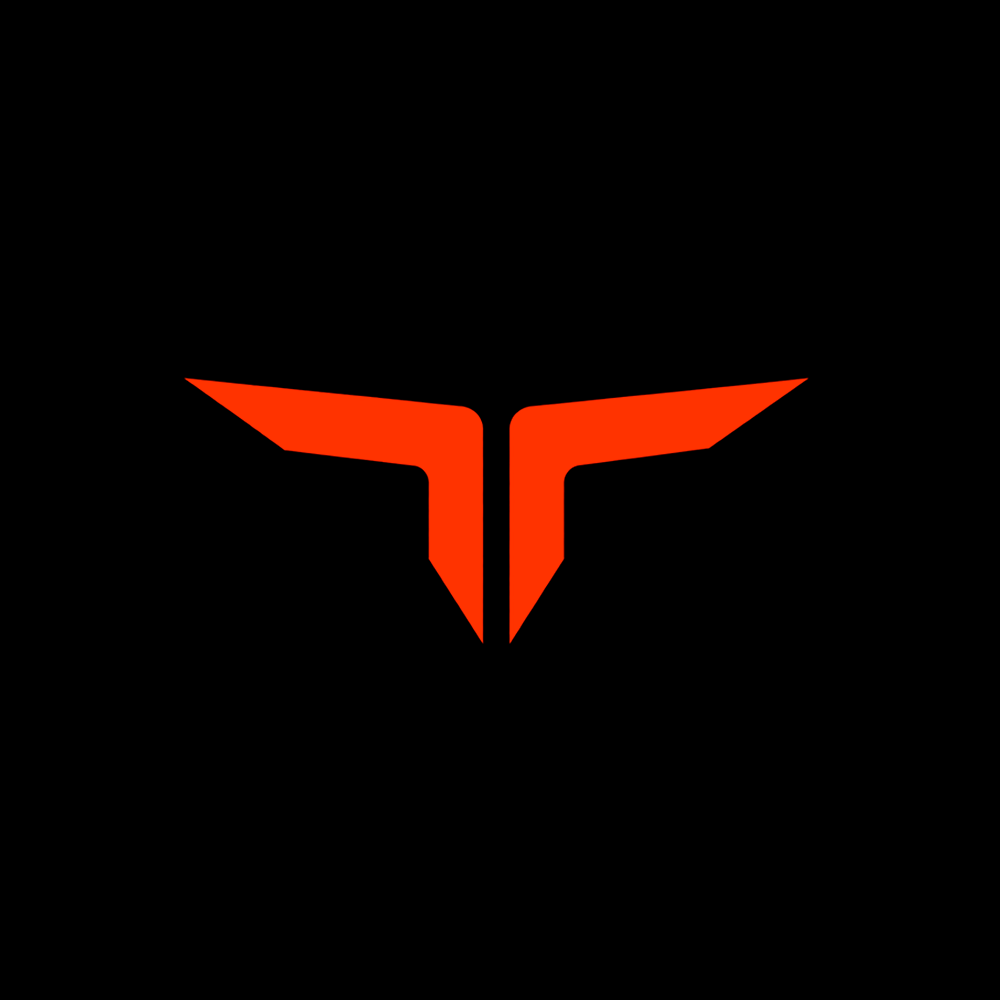

Toruk Club
@torukclub
A próxima grande marca de performance do Brasil está sendo construída aqui.
Grátis: Junte-se a Comunidade Toruk
Quem chega cedo, senta na janela.
Nosso Instagram
Nos siga em nossa rede social oficial